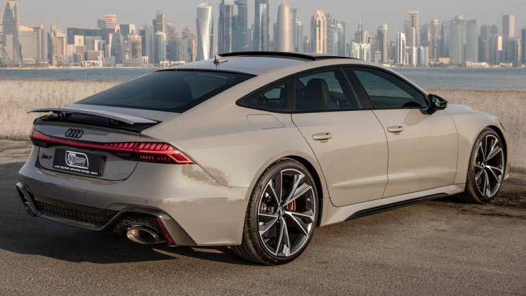
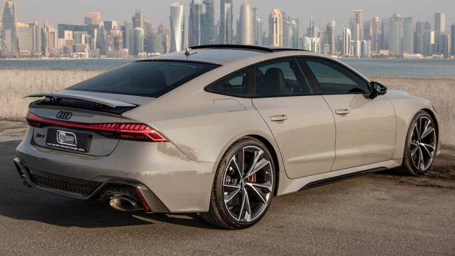

Двигателят е същият 4.0-литров V8 от RS6 Avant и предлага мека хибридна система със задвижван от ремък стартер генератор. Общата мощност е 600 к.с. и 800 Nm (590 lb-ft) въртящ момент. Енергията се изпраща към системата за задвижване на всички колела чрез 8-степенна автоматична скоростна кутия. Сцеплението се основава на напълно механичен централен диференциал, който изпраща въртящ момент към предния и задния мост в съотношение 40:60. Спринтът от 0 до 100 км/ч (0-62 мили/ч) се извършва за 3,6 секунди, а максималната скорост е 305 км/ч (189,5 мили/ч).
 
